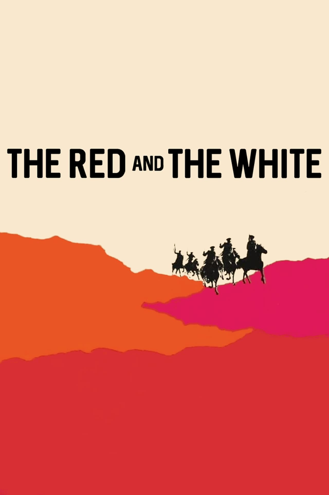

Fiche technique

- Titre original
- Csillagosok, katonák (« Étoiles, soldats »)[2]
- Titre français
- Rouges et Blancs
- Réalisation
- Miklós Jancsó
- Scénario
- Miklós Jancsó, Gyula Hernádi, Giorgi Mdivani[21]
- Photographie
- Tamás Somló[2]
- Décors
- Tamás Banovich, Éva Martin[8]
- Production
- Mafilm Studio n°4 (Hongrie), Mosfilm (URSS)[1]
- Interprètes principaux
- András Kozák, Krystyna Mikołajewska, József Madaras, Mikhaïl Kozakov, Tatiana Koniukhova, Nikita Mikhalkov[21]
- Tournage
- Bords de la Volga, URSS
- Sortie
- 7 novembre 1967 (URSS, version remontée) ; 20 septembre 1968 (É.-U.)[2]
- Sélection
- Festival de Cannes 1968 (festival interrompu par mai 68, aucun prix décerné)[1]
- Durée
- 87 à 90 min selon les versions et restaurations[8]
- Pays
- Hongrie, URSS
- Genre / format
- Drame de guerre, noir et blanc, scope anamorphique 2.35:1
- Distinction
- Meilleur film étranger 1969, Syndicat français de la critique de cinéma[2]
Synopsis
Russie, 1919. Au cœur de la guerre civile qui suit la révolution bolchévique, László, un internationaliste hongrois, est venu prêter main-forte à ses camarades russes de l'Armée rouge, engagés dans des combats sans merci contre les armées blanches tsaristes sur les rives de la Volga[1]. Un monastère et un hôpital de campagne tenu par des infirmières changent plusieurs fois de mains au fil du récit[4].
Aux massacres commis par les uns répondent ceux commis par les autres[1] : les prisonniers sont dénudés, relâchés, traqués, exécutés ou graciés selon des logiques qui échappent à toute cohérence idéologique claire. Seule Olga, infirmière en chef de l'hôpital, tente de faire tenir un principe de neutralité — soigner les blessés des deux camps — de plus en plus intenable à mesure que le récit avance[9].
Contexte de production
Rouges et Blancs est une commande officielle : une coproduction soviéto-hongroise destinée à célébrer le cinquantenaire de la révolution d'Octobre 1917[2]. Plutôt que de filmer un hommage hagiographique à la naissance du communisme soviétique, Jancsó déplace l'action à 1919, en pleine phase de « communisme de guerre », et choisit de montrer des volontaires hongrois irréguliers soutenant les Rouges dans une guerre civile dépeinte sans emphase héroïque[2].
Le résultat déplut fortement à ses commanditaires : la version présentée pour la première officielle du 7 novembre 1967 en URSS fut remontée afin de lui donner un tour plus héroïque[2]. Selon les critiques Mira et Antonin Liehm, le montage original de Jancsó — où les Rouges parlent hongrois et les Blancs russe — ne fut, en tant que tel, jamais distribué en Union soviétique, alors même qu'il s'agissait d'une coproduction soviétique[1]. Un documentaire de 2011 (Iván Forgách et Sebestyén Kodolányi, 52 minutes) reviendra sur cet épisode de censure lors d'une restauration ultérieure du film[8][21].
Le critique hongrois Robert Bán rapporte que Jancsó s'était fait projeter les grands westerns de John Ford avant le tournage — une influence sensible dans le traitement du paysage et de l'espace du film[1].
Structure narrative
Le film renonce délibérément à toute intrigue centrale et à tout protagoniste au sens classique. Jancsó le formule lui-même : « Dans mon film, il n'y a pas deux côtés, deux ennemis, il y a un changement permanent entre les deux groupes »[1]. László apparaît à la première comme à la dernière scène sans jamais devenir un centre de gravité narratif[9].
Les critiques Liehm rapprochent cette construction de la description stendhalienne de la bataille de Waterloo dans La Chartreuse de Parme : le récit refuse la vision cohérente et synthétique des combats pour adopter la perception fragmentée et désordonnée du combattant lui-même[1]. Le pouvoir change de main à un rythme presque comique, chaque prise de contrôle portant avec elle des conséquences mortelles immédiates[15].
Mise en scène et procédés techniques
La mise en scène de Jancsó repose sur de très longs plans-séquences, chorégraphiés au mouvement près, où figurants et caméra se déplacent selon des trajectoires qui se répondent sans jamais se calquer l'une sur l'autre[10]. Le noir et blanc anamorphique en 2.35:1 signé Tamás Somló déploie les combattants dans l'immensité des paysages dépouillés de la Volga — grands angles, profondeur de champ, prises de vue aériennes — au point de les réduire à des figures géométriques absorbées par l'espace[1]. Mira et Antonin Liehm appellent cet effet une « géométrie de la terreur »[1].
Le motif le plus insistant du film reste le rituel de la mise à nu forcée, infligé aux prisonniers des deux camps comme marqueur immédiat de défaite et de vulnérabilité — motif que Jancsó reprendra dans plusieurs films ultérieurs comme signe visuel de toute relation de domination[13]. Le son, quant à lui, reste dépouillé de toute musique d'accompagnement non diégétique : bruits de pas isolés, chants d'oiseaux soudain recouverts par des coups de feu[10].
Le pouvoir circule sur le terrain sans jamais s'y fixer : un même lieu change plusieurs fois de couleur, un même corps passe de chasseur à gibier, sans que la caméra ne prenne jamais parti dans son cadrage.
Personnages principaux
László
András KozákInternationaliste hongrois venu combattre aux côtés des Rouges ; présent au début et à la fin du film sans jamais en devenir le centre.
Olga
Krystyna MikołajewskaInfirmière en chef de l'hôpital de campagne, incarnation d'une neutralité et d'une éthique de soin de plus en plus intenables face à la logique de guerre.
Le commandant hongrois
József MadarasChef des volontaires hongrois engagés aux côtés de l'Armée rouge.
Un officier blanc
Nikita MikhalkovRôle tenu par le futur cinéaste russe, alors jeune acteur, figure de l'arbitraire cruel de l'autorité blanche.
Thèmes
- Cycle de la violence et interchangeabilité des rôles. Le pouvoir change constamment de main sans que la nature de la domination change — bourreau et victime peuvent échanger leur place d'une séquence à l'autre[1].
- La dénudation comme rituel de pouvoir. Déshabiller de force, hommes comme femmes, est le geste par lequel chaque camp affirme sa domination sur l'autre — un motif que Jancsó érige en grammaire visuelle de l'oppression[13].
- L'espace comme force d'anéantissement. L'immensité de la steppe et les plans d'ensemble dissolvent l'individu dans la géométrie du terrain, jusqu'à faire de chaque combattant une variable interchangeable du dispositif guerrier[1].
- Refus de l'héroïsme de commande. Là où la commande soviétique attendait un récit édifiant de la naissance du communisme, Jancsó livre un film profondément anti-héroïque, sans clarté idéologique ni figure exemplaire[2].
- Le corps féminin, dernier réduit de neutralité. Les infirmières, et la tentative d'Olga de soigner sans distinction de camp, représentent un principe que la logique guerrière finit par menacer directement[9].
Réception et postérité
Conçu comme un hommage officiel, Rouges et Blancs devient, à sa sortie, un embarras pour ses commanditaires soviétiques : remonté pour sa présentation officielle du 7 novembre 1967, le film touche malgré tout 2,6 millions de spectateurs en URSS[2], tandis que la version originale de Jancsó n'y sera, elle, jamais distribuée[1].
Sélectionné pour la compétition du Festival de Cannes 1968, le film ne concourt finalement pas : le festival est interrompu avant son terme en raison des événements de mai 68 en France, et aucun prix n'est décerné cette année-là[1]. Il est néanmoins élu meilleur film étranger de l'année 1969 par le Syndicat français de la critique de cinéma, et sort aux États-Unis le 20 septembre 1968[2].
« Jancsó est un génie. Avant lui, le cinéma hongrois n'était qu'une industrie petite-bourgeoise, kitsch et sotte. » Béla Tarr, cité par Senses of Cinema
Le film s'impose rétrospectivement comme un jalon du plan-séquence politique, annonçant des œuvres ultérieures de Jancsó comme Psaume rouge (1972), et comme une référence majeure pour des cinéastes tels que Béla Tarr[11]. Sa parenté avec Je suis Cuba de Mikhaïl Kalatozov — grand-angle noir et blanc, plans-séquences virtuoses au service d'un cinéma de commande politique détourné — est régulièrement relevée par la critique[14]. Le film a fait l'objet d'une restauration 4K récente à partir des négatifs originaux, incluant en supplément le documentaire sur la censure soviétique subie lors de sa production[8][22].
Conclusion
Rouges et Blancs retourne contre ses commanditaires l'instrument même de la commande : là où l'on attendait la geste glorieuse d'Octobre, Jancsó livre une mécanique froide où bourreaux et victimes échangent sans cesse leurs rôles, filmée dans une immensité qui réduit chaque combattant à une variable interchangeable. Cette « géométrie de la terreur » ne prend le parti d'aucun camp — pas même, en définitive, celui qui l'a financée — et c'est précisément ce refus qui en a fait, contre toute attente initiale, un des sommets du cinéma politique moderne plutôt qu'un film de commande oublié.
Sources
- Wikipédia (FR), « Rouges et Blancs » — fr.wikipedia.org
- Wikipedia (EN), « The Red and the White » — en.wikipedia.org
- Festival de Cannes / La Cinémathèque française, fiche film — cinematheque.fr
- Clavis Films, fiche DVD/Blu-ray et bonus — clavisfilms.com
- notcoming.com, critique détaillée — notcoming.com
- Senses of Cinema, « The Political and Metaphysical Sequence Shot » — sensesofcinema.com
- Senses of Cinema, « In Memoriam: Miklós Jancsó » — sensesofcinema.com
- Senses of Cinema, « The Round-Up » (contexte stylistique) — sensesofcinema.com
- photogénie.be, « Remembering Miklós Jancsó: A Long Take on His Early Oeuvre » — photogenie.be
- Daily Film Dose, critique — dailyfilmdose.com
- Rotten Tomatoes, critiques agrégées — rottentomatoes.com
- Shangols (canalblog), critique — shangols.canalblog.com
- MUBI, fiche film — mubi.com
- MUBI Notebook, « Relay: A Take in Miklós Jancsó's The Red and the White » — mubi.com/notebook
- MUBI Notebook, « Movie Poster of the Week: Peter Strausfeld's posters » — mubi.com/notebook
- Budapest Poster Gallery, affiche originale — budapestposter.com
- Magyar Nemzeti Digitális Archívum, fiche technique — mandarchiv.hu
- Amazon, coffret Blu-ray « Miklós Jancsó Collection » (Kino Lorber) — amazon.com
- IMDb — imdb.com/title/tt0061537
- AlloCiné — allocine.fr